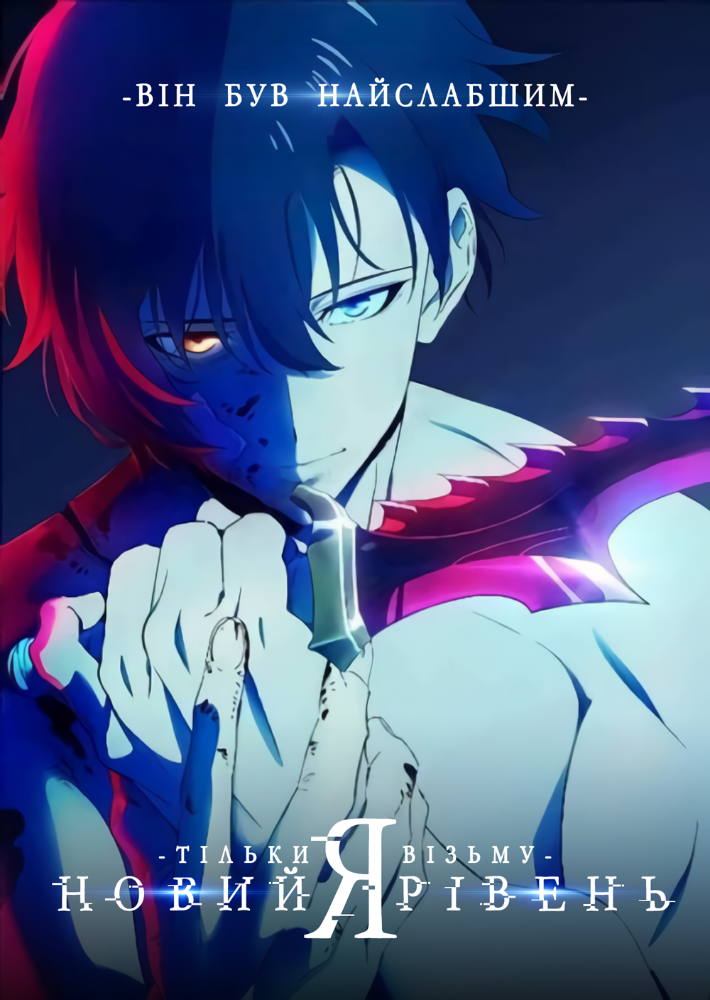

Більше десяти років тому по всьому світі почали з'являтися Брами —
портали, що з'єднували наш світ із потойбіччям. Людей, які пробудили в
собі надзвичайні здібності й ризикнули кинути виклик цим чудовиськам,
назвали мисливцями. І Сон Джін-У — якраз один із них. От тільки, на
відміну від колег, хлопець не вирізнявся якоюсь особливою силою та
навичками, за що й отримав прізвисько "Найслабший мисливець у світі".
Однак він усе одно раз по раз заходить у підземелля й безстрашно полює
на монстрів, аби сплатити рахунки за лікування матері та забезпечити
родину. Усе змінюється, коли Джін-У виживає в справжній кривавій
лазні. Отямившись у лікарні, він починає бачити те, що недоступно
іншим — "Список завдань" із інтенсивними тренуваннями, за невиконання
яких на нього чекатиме суворе покарання. І якщо спочатку хлопець геть
не вірить власній галюцинації, то дуже скоро розуміє, що ця система,
чим би вона не була, здатна перетворити його на найнебезпечнішого
мисливця у світі.